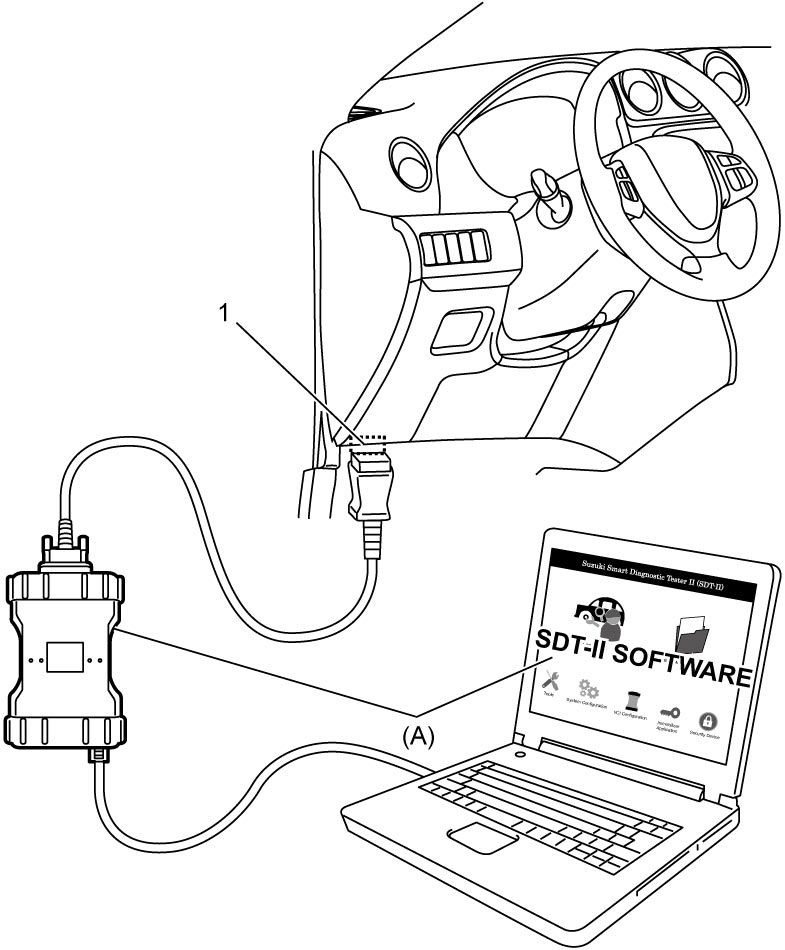
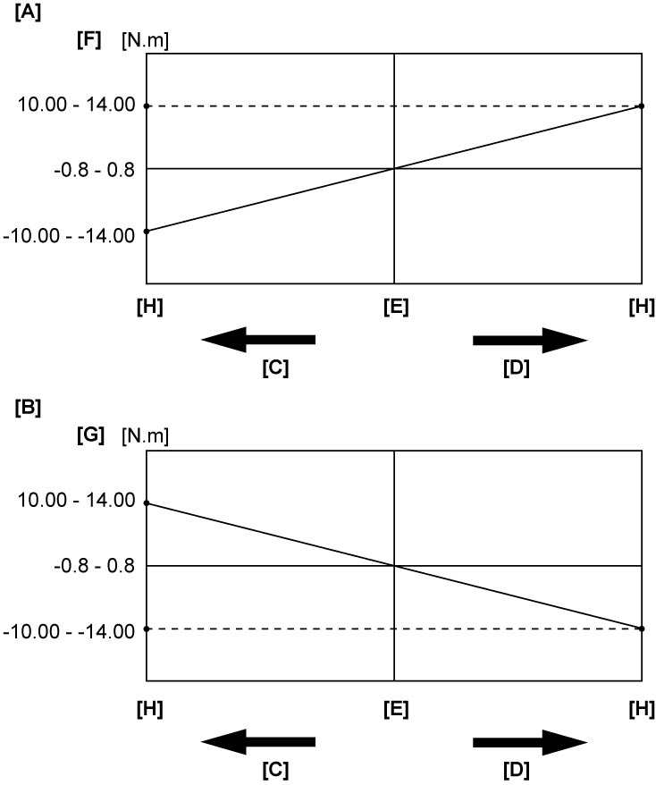
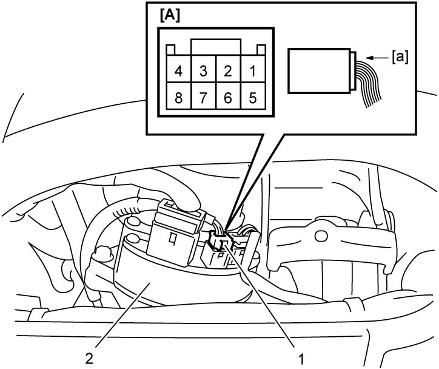
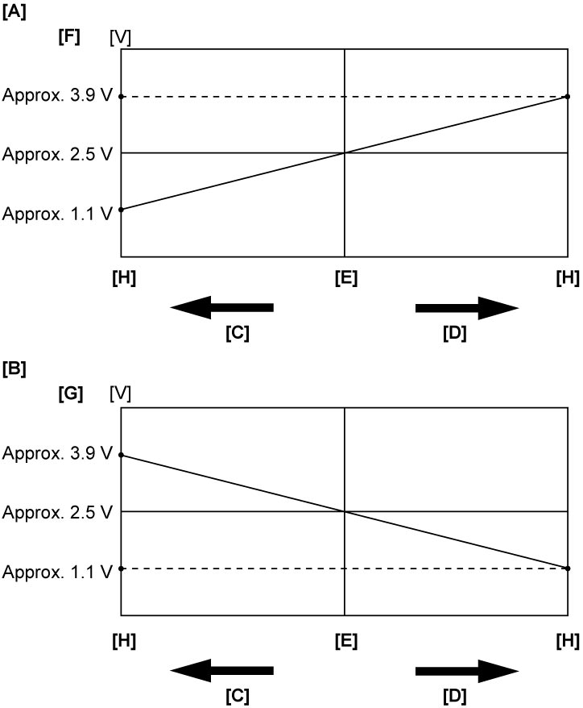

6C
| Torque Sensor Inspection |
Using SUZUKI Scan Tool
1)Connect SUZUKI scan tool to DLC (1) located around bottom of instrument panel on driver’s seat side.


 "Expand image")
2)Start engine and check “Sensor (Main) Torque” and “Sensor (Sub) Torque” in “Data list” mode on SUZUKI scan tool.
3)Check each of “Sensor (Main) Torque” and “Sensor (Sub) Torque” changes linearly as specified in the following graph.

 "Expand image")
| [A]: | Main sensor |
| [B]: | Sub sensor |
| [C]: | Steering force at left turn |
| [D]: | Steering force at right turn |
| [E]: | Steering wheel at neutral |
| [F]: | “Sensor (Main) Torque” in “Data List” displayed on scan tool |
| [G]: | “Sensor (Sub) Torque” in “Data List” displayed on scan tool |
| [H]: | Turn steering wheel fully and hold it with force applied. |
4)If check result is not as specified, repair or replace any of the following items.
•Torque sensor harness and connector
•Torque sensor (steering column assembly)
•P/S control module (steering column assembly)
•Torque sensor (steering column assembly)
•P/S control module (steering column assembly)
Using Voltmeter
1)Remove combination meter. 
2)Start engine and measure voltage between terminals “8” – “5” and “6” – “5” at “G54” connector (1) connected to P/S control module / motor assembly (2).

 "Expand image")
| [A]: | P/S control module connector “G54” (View: [a]) |
3)Check voltage changes linearly in main sensor and sub sensor as specified in the following graph.

 "Expand image")
| [A]: | Main sensor |
| [B]: | Sub sensor |
| [C]: | Steering force at left turn |
| [D]: | Steering force at right turn |
| [E]: | Steering wheel at neutral |
| [F]: | “Sensor (Main) Torque” measured voltage by voltmeter |
| [G]: | “Sensor (Sub) Torque” measured voltage by voltmeter |
| [H]: | Turn steering wheel fully and hold it with force applied. |
4)If check result is not as specified, repair or replace any of the following items.
•Torque sensor harness and connector
•Torque sensor (steering column assembly)
•P/S control module (steering column assembly)
•Torque sensor (steering column assembly)
•P/S control module (steering column assembly)